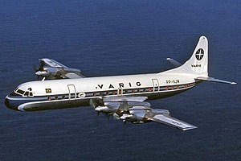

Lockheed L-188 foi um avião comercial de médio porte, turboélice de fabricação norte-americana, projetado e construído pela Lockheed. Foi o primeiro avião turboélice comercial construído nos Estados Unidos. Voou pela primeira vez em 1957.
O Lockheed L-188 Electra começou a ser desenvolvido em 1954 para atender uma exigência da American Airlines a fim de operar em rotas domésticas de curto e médio alcance. O protótipo voou em 6 de dezembro de 1957. Muitas outras companhias aéreas americanas já se interessavam pelo modelo e a lista de pedidos já passava de 144. Seu primeiro voo comercial foi em 12 de janeiro de 1959, com a Eastern Air Lines (devido a uma greve de pilotos da American Airlines). No entanto, o otimismo da Lockheed sobre vendas futuras foi fortemente abalado por uma série de acidentes ocorridos entre 1959 e 1960 (dois deles onde a aeronave partiu-se em voo), que contribuiu para uma grande quantidade de cancelamentos de pedidos. Como medida preventiva, restrições à velocidade e altitude de voo foram impostas aos Electras. Após uma longa investigação conduzida pela Lockheed em conjunto com a NASA, finalmente descobriu-se que a causa para as rupturas da estrutura da asa ocorridas em voo foi um erro de projeto das naceles dos motores, que fazia com que estes gerassem uma vibração conhecida como whirl mode, que era transmitida à asa na mesma frequência de ressonância desta, iniciando um movimento de oscilação crescente que culminava no rompimento de sua estrutura e a separação da fuselagem. As naceles foram então reprojetadas, recebendo diversos reforços estruturais, e todas as unidades do L-188 em operação foram imediatamente submetidos a um programa de modificações denominado LEAP - Lockheed Electra Action Program. Dessa forma, o problema foi definitivamente resolvido e as restrições de voo impostas ao Electra foram suspensas. Porém a imagem do modelo estava irremediavelmente manchada entre os usuários de transporte aéreo dos Estados Unidos, sendo esse um dos motivos que levaram ao prematuro encerramento de sua produção, tendo o último Electra produzido, modelo L-188C e número de série 2022, sido entregue à empresa Garuda Indonesian Airways no dia 15 de janeiro de 1961.
Os Electra passaram a operar na Ponte Aérea Rio-São Paulo e tornaram-se equipamentos exclusivos no trecho a partir de março de 1975, após a retirada de serviço do último Vickers Viscount da Vasp. Desde a sua criação, em julho de 1959, a Ponte Aérea foi servida por vários tipos de aviões pertencentes às empresas que faziam parte do acordo operacional. Porém, com a exclusividade do Electra, o número de assentos disponíveis para cada empresa do sistema (Varig, Cruzeiro, VASP e Transbrasil) teve que ser calculado proporcionalmente à participação de cada uma no mercado. Independente disso, os aviões eram sempre operados por tripulantes da Varig, com pessoal de cabine fornecido pela empresa que originasse o voo. Na Ponte, os Electra chegaram a sustentar uma média de 66 voos diários, com partida a cada 15 minutos e, se necessário, faziam voos extras. Essa frequência diminuía nos fins de semana, quando geralmente os voos eram realizados somente de hora em hora. Na época, segundo estatísticas fornecidas pela Varig, a frota dos Electra já havia completado 777.140 horas de voo, com 736.806 pousos, o que dá uma média de 55.510 horas de voo e 52.629 pousos por avião.